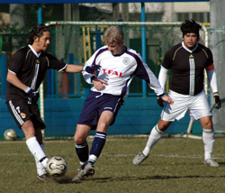
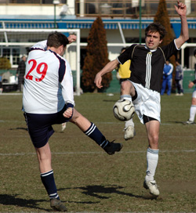

|
YC&AC, Sun 14th Jan. YCAC Sunday 14th January. The usual winter conditions at YCAC on Sunday morning made it difficult, but both teams played their part in a good, open contest played in bright sunshine and a biting wind. A goalless first half was followed by an exciting second period, where the YCAC finally ran out 3-1 winners.
The depleted YCAC 2nd squad was augmented with Steve Taw making a rare appearance at centre-half, and with some new faces in midfield (Neil Shonhard) and upfront (Jamie Richards). It was pretty clear from kick-off that our debutants knew where the goal was, with a powerful header from Neil being cleared on the line. Jamie also announced his intentions with some rifling efforts from distance. On the couple of occasions in the first half that Amanis threatened, midfield and defence combined well to snuff out attacks.
Second half was only a few seconds old when Jamie opened the scoring with a low powerful drive from outside the box. Great goal, we liked it - he liked it too and did the same thing 10 minutes later. Full credit to Amanis, they then came right back into it and were the better team for a good 20 minutes or so. They passed the ball well, playing with the wind helped them keep the pressure on and they fired in some great shots and corners. Kouka-san was doing great in goal, but even he couldn't do much about it when Amanis opened their account - a massive shot from 25 meters which cannoned off the foot of the post, and was neatly converted. We were starting to hang on a bit towards the end, and it took a bit of individual skill from Tom Richards to calm our nerves, making a great break and converting in some style from distance.
A good game, played in the right way and well refereed.
Report by Steve McKie
|